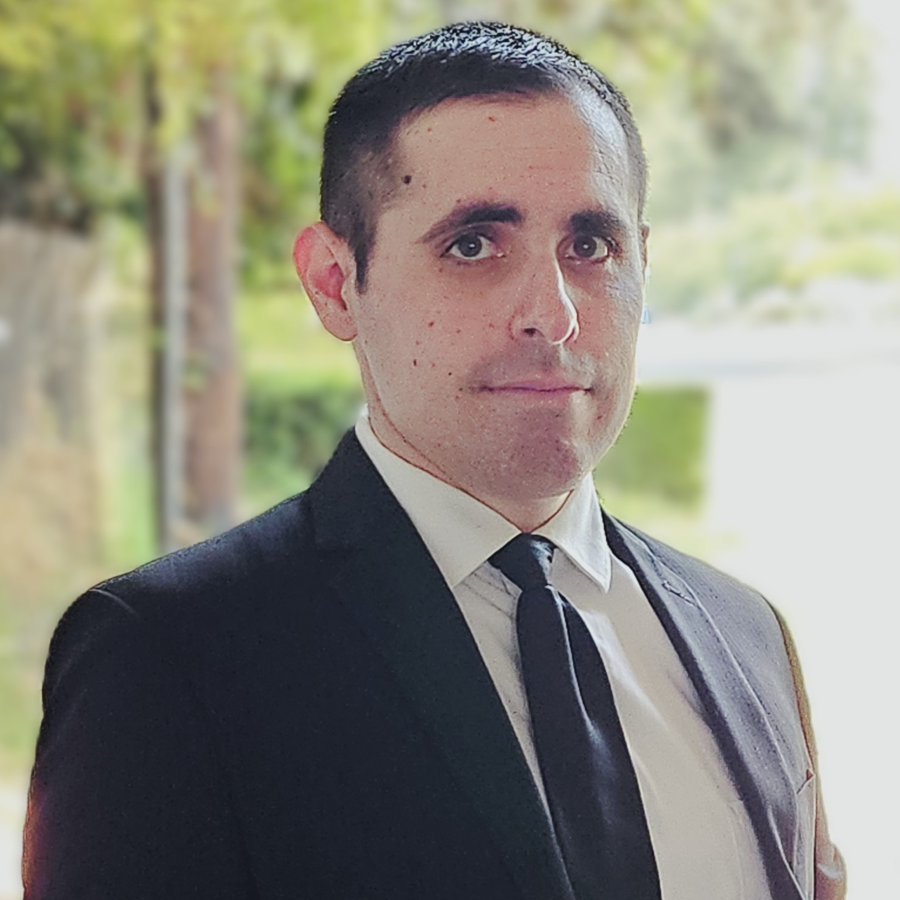

Active Directory Home Lab
Built a Windows Active Directory environment to practice domain administration, Group Policy, DNS, DHCP, and user management.
Technologies Used
- Windows Server
- Active Directory
- DNS
- DHCP
- Group Policy
- VirtualBox

Profession: I am cybersecurity professional.
Specialty: Security Operations / Security Engineering / Cloud Security/ System Administration
Current role: Security Operations Engineer at Specular Theory.
Interest in security engineering / AppSec / cloud / DevOps. Goal of building security-focused projects and growing into engineering roles
Hands-on experience: Wazuh, Azure, AWS, Docker, Kubernetes, Python, SIEM work
I am a Security Operations Engineer with an interest in security engineering, AppSec, cloud security, and DevOps.
Built a Windows Active Directory environment to practice domain administration, Group Policy, DNS, DHCP, and user management.
Configured a Wazuh environment and created custom detection rules to identify repeated failed authentication attempts while reducing alert fatigue.
Built and configured a Wazuh Security Operations Center (SOC) lab to monitor Windows and Linux systems. Developed custom detection rules to identify repeated failed authentication attempts, tuned alerts to reduce false positives, and validated detections using simulated attack techniques.
Designed and deployed a cloud-based security monitoring environment within Microsoft Azure. Configured log collection, monitoring, and security analytics to gain visibility into system activity and improve incident detection through centralized logging.
Designed and developed a personal portfolio website to showcase cybersecurity projects, technical skills, certifications, and professional experience. Built from scratch while learning modern web development concepts including HTML, CSS, semantic page structure, and responsive design.
Developed multiple Python applications while learning programming fundamentals, including a Blackjack game, Caesar Cipher encoder and decoder, and Hangman game. Focused on strengthening problem-solving skills through the use of functions, loops, conditionals, lists, and user input validation.